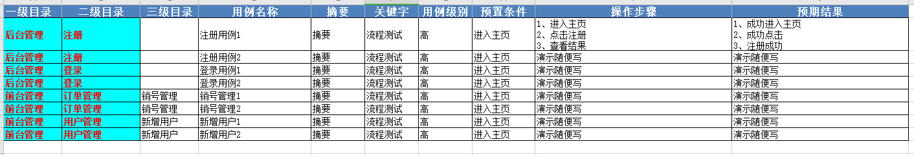
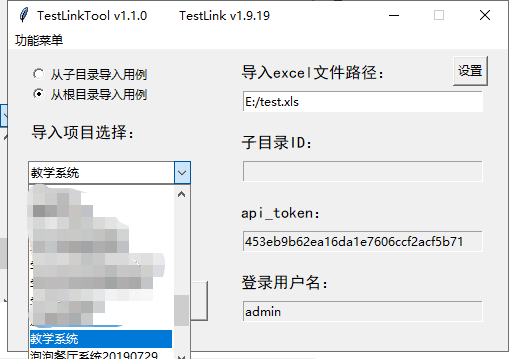
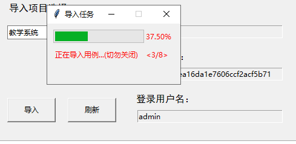
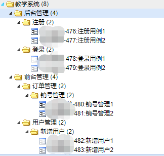
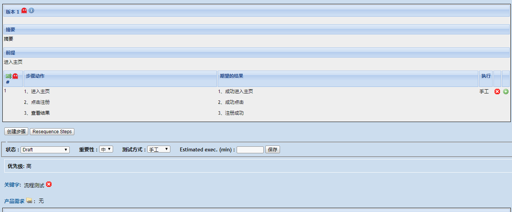

testlink上传用例一种方法是excel转换为xml，然后再用xml上传，还有一种是调用api进行上传。
最开始写了个转换工具，是将excel转换为xml，然后在testlink里上传，最后发现当模块变多以后xml太多，一个一个上传太麻烦，所以尝试用调用api的方式来上传用例，并且打包成exe小工具。
python3.7.4
testlink1.9.14 ( 1.9.14和19都测试通过 )
tkinter ：python自带，用于编写简易的界面
xlrd：第三方库，需要pip安装，读取excel的库，也可以使用pandas代替
TestLink-API-Python-client：第三方库，需要pip安装，提供python和testlink交互的api





1 @dataclass
2 class ClientTestLink:
3 """
4 testlink二次封装
5 """
6 user_api_pwd: str
7 client_url: str = "http://你的testlink地址/testlink/lib/api/xmlrpc/v1/xmlrpc.php"
8
9 def __post_init__(self):
10 self.tlc = TestlinkAPIClient(self.client_url, self.user_api_pwd)
11
12 def get_projects(self):
13 """获取testLink内所有项目"""
14 project_list = []
15 for project in self.tlc.getProjects():
16 project_list.append([project.get("id"), project.get("name")])
17 return project_list
18
19 def get_project_id_by_name(self, project_name):
20 """获取项目id根据项目名称"""
21 return self.tlc.getProjectIDByName(project_name)
22
23 def get_test_suites(self, project_id):
24 """获取指定项目里(需要项目id)的测试用例集"""
25 test_suite_list = []
26 test_suites = self.tlc.getFirstLevelTestSuitesForTestProject(project_id)
27 for test_suite in test_suites:
28 test_suite_list.append([test_suite.get("id"), test_suite.get("name")])
29 return test_suite_list
30
31 def get_test_suite_id(self, project_id, test_suite_name):
32 """查询一级目录"""
33 all_suites = self.get_test_suites(project_id)
34 for i in all_suites:
35 if i[1] == test_suite_name:
36 return i[0]
37 else:
38 pass
39 return False
40
41 def get_test_suite_for_test_suite(self, test_suite_id):
42 """查询用例集下是否含有某用例集"""
43 try:
44 test_suite_id = self.tlc.getTestSuitesForTestSuite(test_suite_id)
45 return test_suite_id
46 except Exception:
47 return False
48
49 def create_test_suite(self, project_id: int, test_suite_name: str, parent_id: int = None):
50 """判断是否拥有测试用例集，如果没有就创建测试用例集"""
51 suite_data = self.tlc.createTestSuite(project_id, test_suite_name, test_suite_name, parentid=parent_id)
52 cheak_bool = isinstance(suite_data, list)
53 if cheak_bool:
54 return suite_data[0].get("id")
55 else:
56 if parent_id is None:
57 return self.get_test_suite_id(project_id=project_id, test_suite_name=test_suite_name)
58 else:
59 for k, v in self.get_test_suite_for_test_suite(parent_id).items():
60 if isinstance(v, dict):
61 if v.get("name") == test_suite_name:
62 return v.get("id")
63 else:
64 pass
65 else:
66 return self.get_test_suite_for_test_suite(parent_id).get("id")
67
68 def create_test_case(self, project_id: int, test_suite_id: int, test_case_name, summary, preconditions,
69 step, result, author_login):
70 """创建测试用例"""
71 self.tlc.initStep(step, result, 1)
72 return self.tlc.createTestCase(testprojectid=project_id,
73 testsuiteid=test_suite_id,
74 testcasename=test_case_name,
75 summary=summary,
76 preconditions=preconditions,
77 authorlogin=author_login
78 )
79
80 def update_project_keywords(self, project_id, test_case_id, keyword_value):
81 """加关键字"""
82 test_case = self.tlc.getTestCase(testcaseid=test_case_id)[0]
83 args = {
84 'testprojectid': project_id,
85 'testcaseexternalid': test_case['full_tc_external_id'],
86 'version': int(test_case['version'])
87 }
88 keyword = self.tlc.addTestCaseKeywords({args['testcaseexternalid']: [keyword_value]})
89 return keyword
90
91 def update_custom_field(self, project_id, test_case_id, custom_fields: dict):
92 """更新自定义字段"""
93 test_case = self.tlc.getTestCase(testcaseid=test_case_id)[0]
94 args = {
95 'testprojectid': project_id,
96 'testcaseexternalid': test_case['full_tc_external_id'],
97 'version': int(test_case['version'])
98 }
99 custom = self.tlc.updateTestCaseCustomFieldDesignValue(
100 args['testcaseexternalid'], args['version'], args['testprojectid'], custom_fields)
101 return custom 1 def run_root(excel_file_name, project_id, username, api_token):
2 """
3 创建用例
4 """
5 case_num = get_all_case_num(excel_file_name)
6 win2 = tk.Tk()
7 # 设置标题
8 win2.title("导入任务")
9 # 设置大小和位置
10 win2.geometry("220x100")
11 # 禁止改变窗口大小
12 win2.resizable(0, 0)
13 mpb = ttk.Progressbar(win2, orient="horizontal", length=150, mode="determinate")
14 mpb.place(x="10", y="10")
15 mpb["maximum"] = case_num
16 mpb["value"] = 0
17 upload_label = tk.Label(win2, text='正在导入用例...(切勿关闭)', fg='red')
18 upload_label.place(x="10", y="40")
19 upload_label_text = tk.Label(win2, text='', fg='red')
20 upload_label_text.place(x="160", y="40")
21 upload_per_label = tk.Label(win2, text='', fg='red')
22 upload_per_label.place(x="160", y="10")
23 # 读取excel，获取数据
24 datacases = xlrd.open_workbook(excel_file_name)
25
26 sheets = datacases.sheet_names()
27
28 for sheet in sheets:
29 sheet_1 = datacases.sheet_by_name(sheet)
30
31 # ====================测试用例功能模块==============================
32
33 row_num = sheet_1.nrows
34 for i in range(1, row_num):
35 # 定义默认步骤编号第一步
36 catalog_1 = sheet_1.cell_value(i, 0) # 一级目录
37 catalog_2 = sheet_1.cell_value(i, 1) # 二级目录
38 catalog_3 = sheet_1.cell_value(i, 2) # 三级目录
39 test_case_name = sheet_1.cell_value(i, 3) # 用例名称
40 summary = sheet_1.cell_value(i, 4) # 摘要
41 key_words = sheet_1.cell_value(i, 5) # 关键字
42 test_case_level = sheet_1.cell_value(i, 6) # 用例级别
43 preconditions = sheet_1.cell_value(i, 7) # 预置条件
44 step = sheet_1.cell_value(i, 8) # 操作步骤
45 step_list = []
46 # 处理换行
47 for i_step in step.split('\n'):
48 step_list.append("<p>" + i_step + "</p>")
49 step = ''.join(step_list)
50 expected_results = sheet_1.cell_value(i, 9) # 预期结果
51 expected_results_list = []
52 # 处理换行
53 for i_expected_results in expected_results.split('\n'):
54 expected_results_list.append("<p>" + i_expected_results + "</p>")
55 expected_results = ''.join(expected_results_list)
56
57 # 创建一级目录
58 test_suite_id = ClientTestLink(api_token).create_test_suite(project_id=project_id,
59 test_suite_name=catalog_1)
60 # 创建二级目录
61 if catalog_2:
62 test_suite_id = ClientTestLink(api_token).create_test_suite(project_id=project_id,
63 test_suite_name=catalog_2,
64 parent_id=test_suite_id)
65 # 创建三级目录
66 if catalog_3:
67 test_suite_id = ClientTestLink(api_token).create_test_suite(project_id=project_id,
68 test_suite_name=catalog_3,
69 parent_id=test_suite_id)
70 result = ClientTestLink(api_token).create_test_case(
71 project_id=project_id,
72 test_suite_id=test_suite_id,
73 test_case_name=test_case_name,
74 summary=summary,
75 preconditions=preconditions,
76 step=step,
77 result=expected_results,
78 author_login=username)
79
80 test_case_id = result[0].get("id")
81 # 添加关键字
82 ClientTestLink(api_token).update_project_keywords(project_id=project_id,
83 test_case_id=test_case_id,
84 keyword_value=key_words)
85 # 添加自定义字段
86 ClientTestLink(api_token).update_custom_field(project_id=project_id,
87 test_case_id=test_case_id,
88 custom_fields={"优先级": test_case_level})
89 mpb["value"] = i
90 upload_label_text.config(text=f"<{i}/{case_num}>")
91 upload_per_label.config(text=f"{((i / case_num) * 100):.2f}%")
92 win.update()
93 print(f"{test_case_id}-上传用例成功")
94 win2.destroy()等稍后整理好后会把整个源码放出来，因为写的比较着急，很多代码逻辑没考虑到，欢迎指出，指出必改。